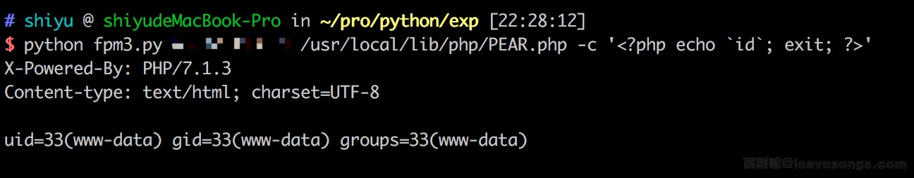

PHP-FPM FastCGI Unauthorized Access Leads to Remote Code Execution¶
PHP-FPM (FastCGI Process Manager) is an alternative PHP FastCGI implementation with some additional features useful for sites of any size, especially busier sites. When misconfigured, PHP-FPM can be accessed directly through the FastCGI protocol, allowing attackers to execute arbitrary PHP code.
This vulnerability occurs when PHP-FPM is exposed to the network without proper access controls, allowing unauthorized access to the FastCGI interface.
References:
- https://www.leavesongs.com/PENETRATION/fastcgi-and-php-fpm.html
- https://www.php.net/manual/en/install.fpm.php
Environment Setup¶
Execute the following command to start the vulnerable PHP-FPM server:
docker compose up -d
After the server starts, the PHP-FPM server will listen on port 9000.
Vulnerability Reproduction¶
A proof-of-concept exploit script is available at: https://gist.github.com/phith0n/9615e2420f31048f7e30f3937356cf75
The script allows you to:
- Connect directly to the PHP-FPM port
- Send crafted FastCGI requests
- Execute arbitrary PHP code on the target server
Successful exploitation result:
